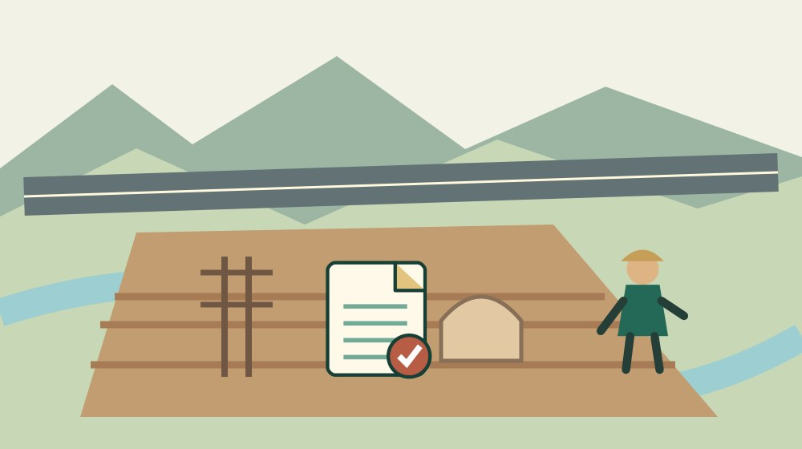
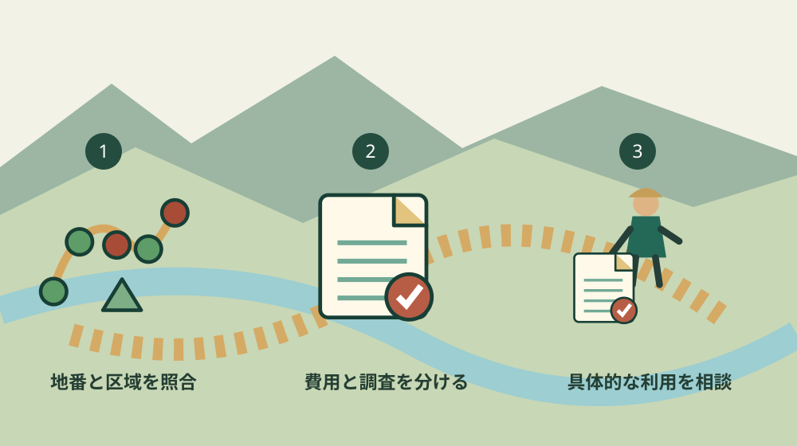

森掛川IC周辺の土地開発｜町が難しいとした理由
／ 農地・山林・茶畑

Q. ICの近くなら、土地は開発できて高く売れる？
A. 森掛川ICへの近さだけで、開発可能性や売却価格は決まりません。森町は睦実地内約18.3ヘクタールの調査区域について、地盤対策や埋蔵文化財調査の費用・期間から開発が困難と判断しています。公開された分譲予定価格は検討時点の事業上の数字で、現在の私有地の査定額ではありません。まず地番と調査区域を照合します。
町の調査を、持ち主の判断材料として読む
森掛川IC周辺の土地には、交通の便から活用を期待する気持ちがあると思います。一方、茶畑や山林を管理してきた持ち主の方には、草刈りや進入路の手入れという日々の負担があります。期待だけを強調しても、その仕事はなくなりません。町が土地利用の条件を調べた努力を認めたうえで、何が障害になったのかを読みます。
大石浩之（磐田市／不動産業）です。この記事では、森町の「令和4年度 森掛川IC周辺地区開発可能性調査業務について」を扱います。2026年に新たに開発が中止されたというニュースではありません。公開済みの調査が、土地を持つご家族の判断に何を教えるかを整理します。
確認日は2026年10月15日です。町のページの表示更新日は2026年8月21日ですが、調査の期間は2022年8月4日から2023年6月30日です。ページの更新年と、調査が行われた年を混ぜません。初めて公表された日を、表示更新日から推測することもしません。
土地を使う条件を全体から確かめたい方には、森町の用途地域の調べ方が関連します。本記事の焦点は、用途地域の一般解説よりも、IC周辺の特定の調査区域で費用と期間がどう判断されたかにあります。
調査の範囲｜睦実地内の約18.3ヘクタール
森町の調査対象は、睦実地内の森掛川IC周辺地区、約183,000平方メートルです。平方メートルをヘクタールへ直すと約18.3ヘクタールになります。IC周辺の全ての土地について、一律の開発可否を決めた調査ではありません。持ち地の地番を、町の位置図と照合するところから読みます。
町が行った業務には、現況と地質の調査、軟弱地盤の解析、概算事業費の算出が含まれます。道路から見た印象だけで利用を判断する資料ではありません。地表の形に加え、地中の条件を調べて、造成にどの対応が要るかを検討したものです。
町の説明は、費用増加の要因として地質、軟弱地盤、埋蔵文化財への対応を挙げています。工場や物流施設の立地への期待を持ちつつ、対応の費用が想定より大きくなったとしています。交通面の利点と、開発時に負う条件が同時に存在している点を読み取れます。
町は、多額の事業費と長期にわたる埋蔵文化財調査を理由に、対象区域の開発は困難と判断しています。整地した農地や住宅団地として使う場合も、切り盛りや埋蔵文化財調査が必要となり、難しいと説明しています。工場以外なら同じ区域を容易に使える、とまでは読めません。
ただし、この判断を隣の土地や別のIC周辺へ広げることはできません。区域外の土地は、地形、地盤、道路、利用規制を別に確認します。区域内であっても、個別の土地の価値がゼロになったとか、今の利用まで一律に禁じられたという意味には置き換えません。
分譲予定価格｜坪41万5,752円を査定額にしない
森町の公開表では、全体計画案の分譲予定価格は平方メートル当たり125,985円、坪当たり415,752円です。町は価格が検討時点のものと注記しています。持ち主が現況のまま売る土地の単価でも、2026年10月の募集価格でもありません。事業として造成して分譲する想定の数字です。
私は数字を、自分の扱う面積へ置き換えて確かめます。仮に100平方メートルに表の単価を掛ければ、125,985円×100で12,598,500円です。これは単価の大きさを理解するための算術例です。実在する100平方メートルの土地の査定や、この金額で買い手が見つかるという意味ではありません。
全体計画案の概算事業費は151.2億円と掲載されています。その一部の用地費と、造成後の分譲予定価格は、計算の位置が異なります。私は、完成後の価格を見て「持ち地もその単価で売れる」と考えるところに、特に気を付けたいと考えます。整備前と整備後を同じ商品として比較しないためです。
町は、鉄塔を避ける案、鉄塔と既存宅地を避ける案も検討しています。全体計画案だけを選んで数字を読んだわけではありません。区域を小さくすれば負担も単純に比例して小さくなる、とは限らないことを示す資料です。共通して残る調査や工事があれば、分譲できる面積との関係も変わります。
意外なのは、工業用地をやめて農地や住宅団地にすれば解決する、という判断にもならなかった点です。私は、用途の名前より、切り盛りと調査が必要かを先に見るべきだと受け止めます。ただし、町の計画と異なる個別の利用まで、この一文で不可能と決めることはしません。
良い点｜交通の期待と地中の条件を並べている
森掛川IC周辺の公開調査の良い点は、立地への期待だけでなく、費用を押し上げた条件を示していることです。私は、土地の活用を調べる町の仕事として評価します。期待がある場所でも、掘る、運ぶ、支える、調べるという具体的な負担から離れずに検討した内容が読めます。
位置図、調査の種類、概算事業費、町の判断が同じページにまとまっている点も利点です。持ち主の方が、他人から聞いた「開発されるらしい」という話と、確認できる事実を分ける入口になります。家族で資料を見るときにも、どの区域の話をしているかを同じ図で合わせられます。
複数の案と、工業用地以外の利用も検討した記録が残っています。私は、難しいと判断した結論だけでなく、何を変えても残った条件を見る読み方を勧めます。費用の説明と調査期間の説明を別々に追えるため、金額だけが問題なのか、着手できる時期も問題なのかを整理できます。
調査結果が公開されていれば、持ち主はその資料を持って別の相談ができます。これは個別の許可や売買を保証するものではありませんが、話の出発点をそろえる役割があります。私は、利用を決める前に分からないことが一つ減るだけでも、維持管理に向ける時間を選びやすくなると考えます。
注文したい点｜価格の時点と自分の区域を取り違えやすい
森掛川IC周辺の調査は、検討時点の数字と2026年の表示更新日が同じ画面に載っています。私は、読む側が現在の価格と思い込まないよう、調査年度と価格の時点を冒頭でも見つけやすくすると助かると考えます。資料の有用性と、読み違いを防ぐ案内は両方必要です。
位置図の中に自分の土地が入るか分からない場合、画面上でだいたいの場所を見て決めないでください。私は、地番が分かる資料と公図などを持って、町へ確認する段取りを提案します。調査区域の確認と、土地の境界の確定は別の作業です。図の線をそのまま現地の境界杭と見なすこともしません。
町の「都市計画図（用途図）について」は、図が概略を示すもので、詳細を建設課で確認するよう案内しています。公開図だけで法規制の個別判断を終えない、という注意です。私は、ICへの距離、用途地域、調査対象区域の三つを、別の欄にして相談資料へ書く形を勧めます。
私自身、開発の期待をどこまで将来の選択肢として残すかは迷います。調査が難しいと結論づけた以上、具体的な裏付けのない将来価格を家族の計画に入れたくありません。しかし、町の一区域の調査だけで周辺の土地全てを低く見ることもできません。迷う部分は、未確認の条件として残して相談します。
別の場所の工業用地については、中川下の工業用地と造成予定の記事で整理しています。場所も事業の内容も異なるため、そちらの予定を森掛川IC周辺の調査区域へ移して読みません。土地の話では、似た名称より地番と区域が先です。

対案・結論｜今日、地番と位置図を一組にする
森掛川IC周辺に土地を持つ方が今日できる一歩は、納税通知書などから地番を一つ確認し、調査位置図と一組で保存することです。私は、土地の活用を考える前の最小の準備として提案します。地図に入るか判定できなければ、分からないと書いたまま町へ照会します。
町に聞く内容は「この土地は高く売れますか」より先に、「この地番は公開調査の対象区域に含まれますか」です。次に、考えている用途を具体的に伝えます。建物、駐車場、農地の管理など、目的が違えば確認すべき条件も違います。初回の相談で売買や開発の結論を得ようとしなくても構いません。
土地の現況を見る場合は、道路から安全に分かる範囲を記録します。通れる道があるか、誰の道か、排水の先はどこかを区別してメモします。私は、管理のための通行と、建築や開発に必要な道路条件を同じものと扱わない考えです。道路の幅を見ただけで利用可否を断定しません。
家族の間で将来の開発を前提にしているなら、前提をいったん文章にします。「いつか企業が買うと思っている」と「購入の相談が実際にある」は別の欄です。私は、相手や日付が確認できない期待を、維持費や相続の判断に使う確定情報にしないことを勧めます。
具体的な利用を検討する段階では、測量、地盤、文化財、工事、法規制の相談が分かれます。依頼する範囲と費用を先に確認してください。町の調査があることだけで、個別の専門調査が不要になるわけではありません。まず公的資料で絞り込み、次に自分の土地に必要な調査を相談する順序です。
家族に残す記録｜売る予定と管理の仕事を分ける
土地の将来を考えるご家族には、調査資料と現在の管理記録を同時に残す方法が役立ちます。草刈りを頼む相手、進入路の手入れ、連絡を受ける人を記します。開発が困難という情報だけを渡しても、今ある管理の仕事を誰が続けるかは決まりません。
私は、確認済み、照会中、家族の希望を区別する記録を勧めます。町の調査区域に含まれるかは公的な照会で確かめる事項です。家族が売りたいか、残したいかは別の話です。両方を一つのメモに混ぜると、希望が既定の予定として次の世代へ伝わるおそれがあります。
出典のページ名、見た日、調査期間、価格の時点も残します。紙に印刷するなら、数字の表だけでなく注記と町の判断まで一緒に保存します。単価の部分だけ切り取られると、後から見た家族が現在の相場と誤解しやすくなるためです。
土地を相続する場面では、山林を地図で調べる際の注意点も位置を共有する参考になります。ただし、森林の地図は登記や境界確認の代わりではありません。手元の資料で用途が分からない土地ほど、地番ごとに資料をまとめ、個別の判断は窓口や専門家へつなぎます。
大石の視点｜立地の良さを、使える土地の値段と混ぜない
私はこう考えます。ICに近いことは利点ですが、利点だけでは造成費を払えません。町の調査の分譲予定価格を、持ち主が受け取れる金額へ置き換えるのは危険です。土地の値段を話す前に、どの状態の土地を、どの費用まで含めて比較しているかを合わせます。ここは言い切ってよい線だと思います。
私が数字を100平方メートルの例に直したのは、金額を身近にするためです。実際の査定をした経験談を紹介した段落ではありません。売買の条件は道路、形、地盤、利用規制、相手の用途などで変わります。面積を掛ける計算と、不動産の評価は分けて扱います。
森町の土地に可能性があると考えることと、使える根拠のない価格を示すことは両立しません。町の人が続ける管理の負担も、土地の将来を決める材料です。今日の成果は、高いか安いかを決めることではなく、自分の地番がどの調査の対象かを一つ確かめ、次に聞く相手を決めることです。
よくある質問
2026年に新たに中止が決まったのですか？
この記事は公開済みの令和4年度の開発可能性調査を読むものです。調査期間は2022年8月4日から2023年6月30日で、ページの表示更新日は2026年8月21日です。更新日だけを根拠に、2026年の新たな中止決定とは説明できません。対象区域と調査時点の条件を分け、必要な最新情報は森町へ確認してください。
坪41万5,752円で自分の土地も売れますか？
町の表の坪41万5,752円は、全体計画案における検討時点の分譲予定価格です。現況の私有地の査定額や現在の募集単価ではありません。造成や調査を含む事業の数字を、持ち主の売却価格に置き換えないでください。個別の価格は地番、道路、現況、利用条件をそろえ、不動産の専門家へ相談する必要があります。
IC周辺の土地は全て開発できないのですか？
町の判断は、睦実地内約183,000平方メートルの調査対象区域についてのものです。森掛川IC周辺の全ての土地へ広げることはできません。区域内でも、現在の利用や個別の土地の価値を一律に決めた情報ではありません。まず地番と調査位置図を照合し、考えている用途を具体的にして、関係する窓口へ確認してください。
出典・確認日
- 森町：令和4年度 森掛川IC周辺地区開発可能性調査業務について（2026年10月確認／確認日：2026-10-15）
- 森町：都市計画図（用途図）について（2026年10月確認／確認日：2026-10-15）
最終確認日：2026-10-15。制度・数値・窓口案内は変わる場合があります。最新情報は発信主体へ確認してください。権利・登記・相続・農業技術や安全管理など、個別の判断は担当窓口や適切な専門家へご相談ください。